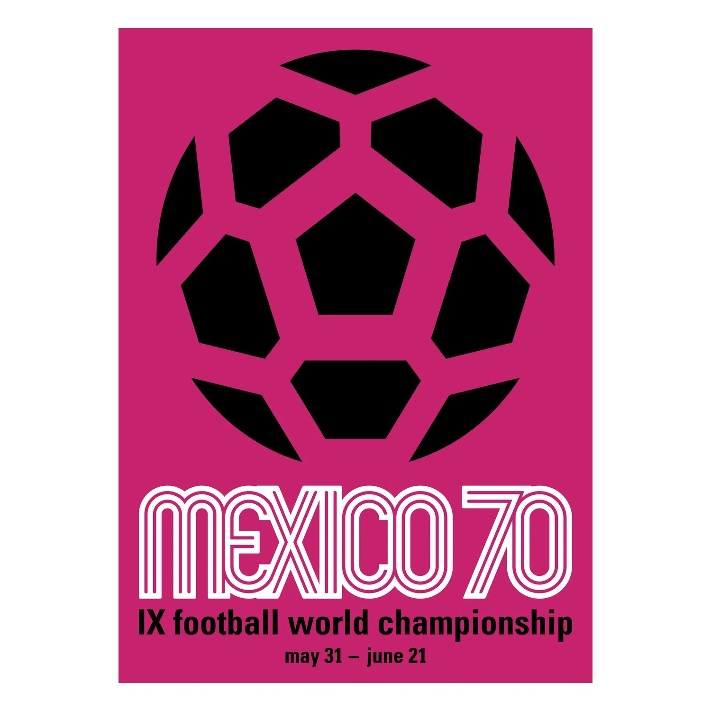
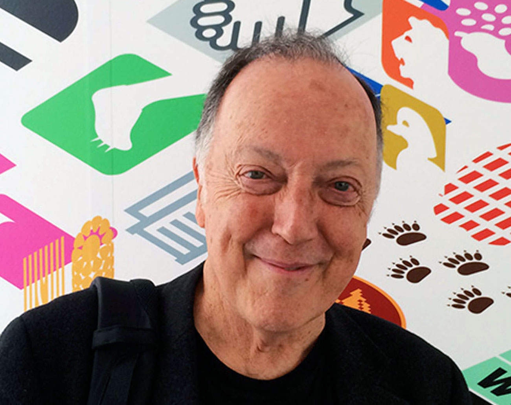

Official Poster
The official 1970 FIFA World Cup poster, designed by American graphic artist Lance Wyman, features a minimalist, stylized soccer ball. While the core graphic remains consistent, the poster was produced in several vibrant background colors, including pink, blue, green, and orange.

Lance Wyman
Lance Wyman (born 1937) is an American graphic designer. He is known for his work under Mexican architect Pedro Ramírez Vázquez, doing design concept and direction in developing applications of the logo for the 1968 Summer Olympics in Mexico City.
Wyman, who has been described as a "rock star" of graphic arts, made his reputation when he collaborated with Eduardo Terrazas, under the direction of architect Pedro Ramírez Vázquez, in the development of the entire design campaign for the Mexico 1968 Summer Olympic Games. He has also designed icons for museums and many other institutions, individualized signs for buildings at the National Zoo in Washington D.C., and many other symbols. Stepping outside his usual genre, he designed a poster for the 2008 Barack Obama presidential campaign.
Perhaps his most enduring design is the stylized route map he devised for the Washington Metro in the mid-1970s, prioritizing the clear representation of routes, stations, transfer points, and certain landmarks over showing distances to scale. In 2011, Wyman was called on to design a new Metro map depicting new lines and route orientations, as well as some station names that had been expanded to the point of being cumbersome. It was one of the few occasions in which the original designer has had a chance to revise his own creation. The new map debuted March 19, 2012, and an update was announced on September 12, 2013. Wyman suggested naming the then-under-construction Metro line the Cherry Blossom Line, but it became the Silver Line instead.
Wyman's work was the subject of a retrospective exhibition called "Urban Icons" at El Museo Universitario Arte Contemporáneo (MUAC) in Mexico City (2014–15). In 2017, he was awarded the AIGA Medal for his "mastery of visual ecosystems and for setting the standard for the universal, public design experience."